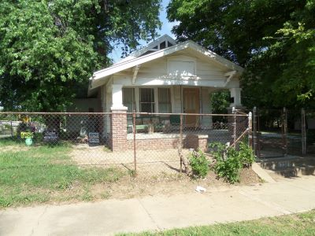
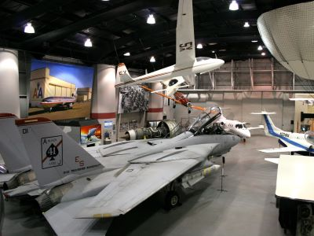
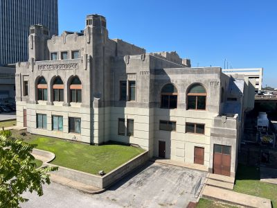
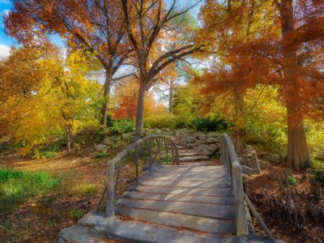
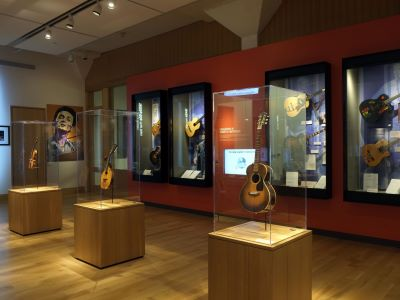

Tulsa Travel Guide
Riverfront hub defined by an Art Deco skyline, world-class museums, an acclaimed urban park, and a storied legacy of oil booms and American music.
Places to See in Tulsa

Michael Barera, CC BY-SA 4.0, via Wikimedia Commons; Image Size Adjusted
.jpg){kind=link}
Blue Dome
Historic 1920s Gulf Oil station turned nightlife landmark anchoring a vibrant downtown district filled with restaurants, bars, and Route 66 culture.

Michael Barera, CC BY-SA 4.0, via Wikimedia Commons; Image Size Adjusted
Buck Atom's Cosmic Curios on 66
Retro-themed gift shop featuring novelty souvenirs, roadside attractions, and quirky Americana collectibles.

Michael Barera, CC BY-SA 4.0, via Wikimedia Commons; Image Size Adjusted
Cave House
Whimsical structure filled with eccentric architecture and folklore, offering guided tours through its quirky interior and storied past.

Michael Barera, CC BY-SA 4.0, via Wikimedia Commons; Image Size Adjusted
Center of the Universe
Circular acoustic anomaly where sounds made at the center echo back louder to the speaker but are inaudible to those outside the circle.
Michael Barera, CC BY-SA 4.0, via Wikimedia Commons; Image Size Adjusted
Cyrus Avery Centennial Plaza
Circular acoustic anomaly where sounds made at the center echo back louder to the speaker but are inaudible to those outside the circle.

Michael Barera, CC BY-SA 4.0, via Wikimedia Commons; Image Size Adjusted
Decopolis Tulsa Art Deco Museum
Interactive mini-museum and themed gift emporium showcasing Tulsa’s Art Deco heritage through immersive exhibits, artifacts, and whimsical displays.

Michael Barera, CC BY-SA 4.0, via Wikimedia Commons; Image Size Adjusted
Gathering Place
Expansive riverfront park offering immersive playgrounds, gardens, trails, and cultural programming designed for all ages and interests.
-400.jpg)
Michael Barera, CC BY-SA 4.0, via Wikimedia Commons; Image Size Adjusted
Golden Driller Statue
Massive oil worker monument standing 76 feet tall, symbolizing Tulsa’s petroleum heritage and visible from the Tulsa Expo Center grounds.
Michael Barera, CC BY-SA 4.0, via Wikimedia Commons; Image Size Adjusted
Greenwood Cultural Center
Cultural institution dedicated to preserving and sharing the history, achievements, and enduring legacy of Tulsa's historic African American community through exhibits, education, and public programs.

Michael Barera, CC BY-SA 4.0, via Wikimedia Commons; Image Size Adjusted
Mother Road Market
Indoor-outdoor food hall and retail hub featuring local eateries, Route 66-themed mini golf, live music, and community events.

Michael Barera, CC BY-SA 4.0, via Wikimedia Commons; Image Size Adjusted
Oklahoma Aquarium
Indoor aquatic museum featuring the world’s largest bull shark exhibit, interactive touch tanks, and over 100 immersive marine and freshwater displays.

Michael Barera, CC BY-SA 4.0, via Wikimedia Commons; Image Size Adjusted
OKPop Museum
Interactive museum celebrating Oklahoma’s contributions to pop culture through exhibits on music, film, television, literature, and more.

Michael Barera, CC BY-SA 4.0, via Wikimedia Commons; Image Size Adjusted
The Outsiders House Museum
Restored bungalow filled with memorabilia and exhibits honoring the film adaptation of S.E. Hinton’s classic novel and its cultural legacy.

Carol M. Highsmith, Public domain, via Wikimedia Commons; Image Size Adjusted
Philbrook Museum of Art
Historic villa-turned-museum featuring global art collections, rotating exhibitions, and 25 acres of formal gardens in a Renaissance setting.

Michael Barera, CC BY-SA 4.0, via Wikimedia Commons; Image Size Adjusted
River Parks
Scenic urban park system with over 26 miles of riverside trails, public art, playgrounds, and outdoor recreation along the Arkansas River.

Michael Barera, CC BY-SA 4.0, via Wikimedia Commons; Image Size Adjusted
Route 66 Historical Village
Open-air transportation museum featuring a towering oil derrick, vintage train cars, and a replica 1920s gas station celebrating Tulsa’s industrial heritage.

OKJaguar, CC BY-SA 4.0, via Wikimedia Commons; Image Size Adjusted

Tulsa Air and Space Museum
Interactive museum and planetarium featuring historic aircraft, space exhibits, and immersive STEM experiences for all ages.

OKJaguar, CC BY-SA 4.0, via Wikimedia Commons; Image Size Adjusted
Tulsa Union Depot
Historic Art Deco train station repurposed as a cultural venue and former home of the Oklahoma Jazz Hall of Fame.

OKJaguar, CC BY-SA 4.0, via Wikimedia Commons; Image Size Adjusted
Woodward Park and Gardens
Expansive public garden featuring historic rock gardens, a rose garden, arboretum, and educational horticultural facilities.

See page for author, CC BY-SA 3.0, via Wikimedia Commons; Image Size Adjusted

Woody Guthrie Center
Interactive museum dedicated to the life, music, and legacy of American folk icon Woody Guthrie, featuring exhibits on social justice and cultural history.
Overview
Tulsa is the second-largest city in Oklahoma, in the northeastern part of the state on the Arkansas River, and it is known as the "Oil Capital of the World" because of the oil boom of the early twentieth century that made it one of the wealthiest cities in the country. It has one of the best collections of Art Deco architecture in the nation, a growing arts and music scene, and a rich Route 66 heritage. The city is also known for the Greenwood District, once known as "Black Wall Street," and the 1921 Tulsa Race Massacre.
Visitors come to Tulsa for Gathering Place, a large riverfront park, for the Philbrook Museum of Art, and the Woody Guthrie Center. They also come for the Greenwood Cultural Center, the Art Deco downtown, and the Route 66 sights, such as the Golden Driller and the nearby Blue Whale of Catoosa, and it is a friendly, affordable city with a lively food and music scene.
History
Tulsa was founded in the 1830s by Creek people who were forced to move from Alabama on the Trail of Tears and established a town called Tallasi, and it grew as a cattle town after the railroad came in 1882. The discovery of the Glenn Pool oil field in 1905 transformed the city into a boomtown, and by the 1920s oil barons built grand mansions and Art Deco skyscrapers. The Greenwood District became a thriving Black business community, and on May 31 and June 1, 1921, a white mob destroyed the neighborhood and killed an estimated 100 to 300 people in one of the worst episodes of racial violence in American history. The city has since worked to remember and acknowledge the event, and it has diversified its economy with aviation, energy, and technology.
Sightseeing and Popular Landmarks
Gathering Place, a 100-acre riverfront park, has playgrounds, gardens, and a skate park, and is free to enter. The Golden Driller, a 76-foot statue of an oil worker, stands at the Tulsa Expo Center, and the Blue Dome District is a historic entertainment district. The Decopolis tells the story of the city's Art Deco buildings, and Cyrus Avery Centennial Plaza honors the "Father of Route 66." The Center of the Universe, an acoustic oddity on a bridge, is a quirky stop.
Culture and Museums
The Philbrook Museum of Art is in an Italian Renaissance-style villa with gardens, and the Gilcrease Museum has one of the best collections of Western and Native American art in the country. The Woody Guthrie Center honors the folk singer, and the Greenwood Cultural Center and the Greenwood Rising history center tell the story of Black Wall Street and the Tulsa Race Massacre. The Tulsa Air and Space Museum, the Oklahoma Pop Museum, and the Oklahoma Aquarium in nearby Jenks are also popular.
Parks
Tulsa has an extensive park system. River Parks is a path along the Arkansas River that runs for miles, and Woodward Park is known for its rose garden and azaleas. Gathering Place has become a national model for urban parks, and the Tulsa Zoo is a popular family attraction. Turner Falls and the Ozark foothills are within a drive, and Lake Keystone and Lake Oologah offer boating and fishing.
Seasons and Weather
Tulsa has a humid subtropical climate. Summers are hot and humid, with highs in the 90s°F, and winters are mild to cold, with highs in the 40s°F and about 9 inches of snow. Spring and fall are the most pleasant seasons, and the city is in Tornado Alley, with severe thunderstorms and tornadoes most likely in spring.
This article uses material from Wikipedia as well as information from official tourism and institutional sources. Key references include Visit Tulsa, Gathering Place, Philbrook Museum of Art, Greenwood Rising, Travel OK, and National Weather Service Tulsa. Wikipedia material is from the articles "Tulsa, Oklahoma" and "Tulsa race massacre", and is available under the Creative Commons Attribution-Share-Alike License 3.0.